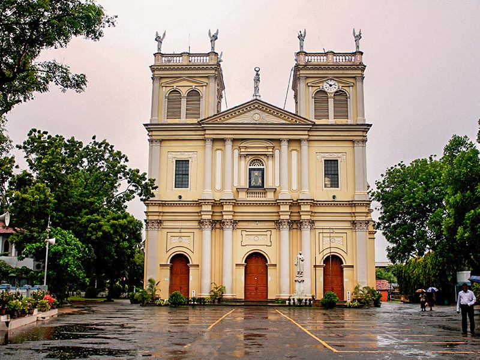
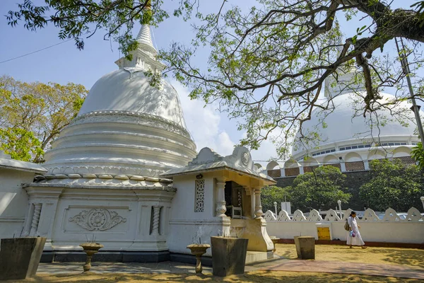
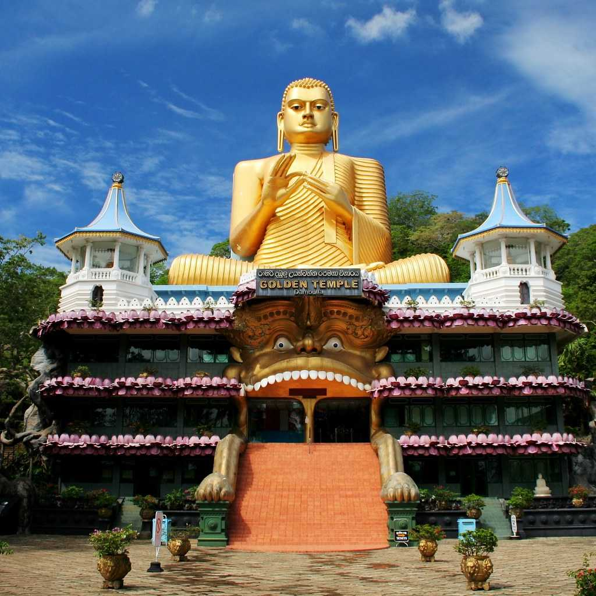
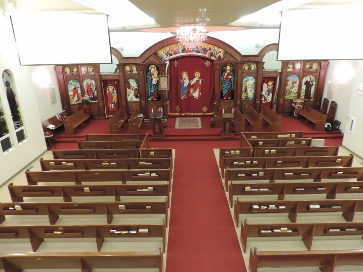

| Name of Religious Places | Pictures | Name of Religious Places | Pictures |
|---|---|---|---|
|  St. Mary's Church is a Catholic church situated in the middle of Kegalle town in Kegalle District, Sm Lanka. It is considered the oldest catholic shrine in the area (Abeyawardana, 2002) |
|
 The island country of Sri Lanka has some beautiful beaches and culinary cuisines to dive into. But barring those, they have much more things to offer. If you are planning to tour the island, make sure to enlist the Ashokaramaya Temple into your itinerary. A Buddhist Temple located in Kegalle, you will be stunned by the religious vibes this place oozes. Adjacent to the temple they have Ashokaramaya School of Buddhism. This is definitely a very nice place to visit, and experience the sense of spiritual calmness. |
|
|
 It is a buddhist monastery closed to Kegalle main city. Actually it is a beautiful and village side temple. |
|
 kings revival church is a Religious organization located in Kegalle. It is one of the 89 Religious organizations in Sri Lanka. Address of kings revival church is Colombo - Kandy Rd, Kegalle, Sri Lanka. kings revival church can be contacted at 94776519559. kings revival church has quite many listed places around it and we are covering at least 142 places around it on Srilanka-Places.com. kings revival church is rated 3.5 (out of 5 stars) by 3 reviewers on the web. |